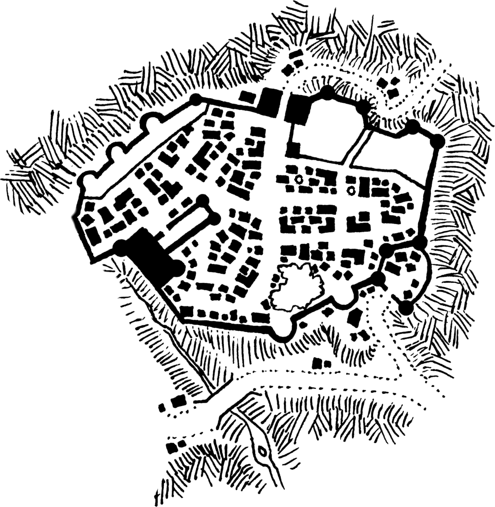
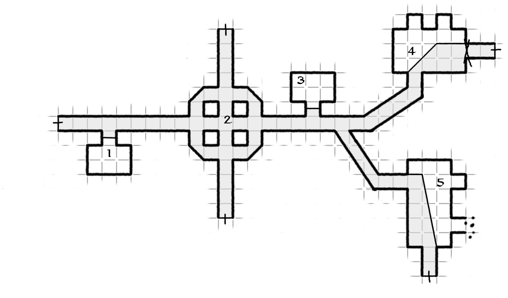
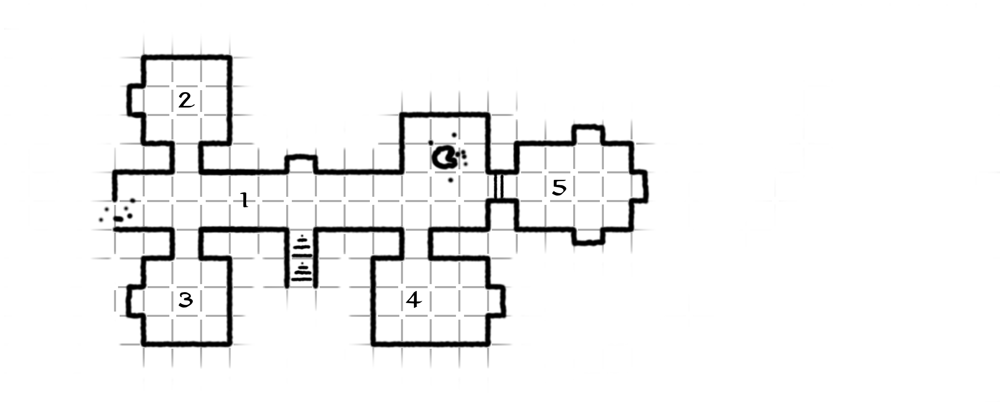
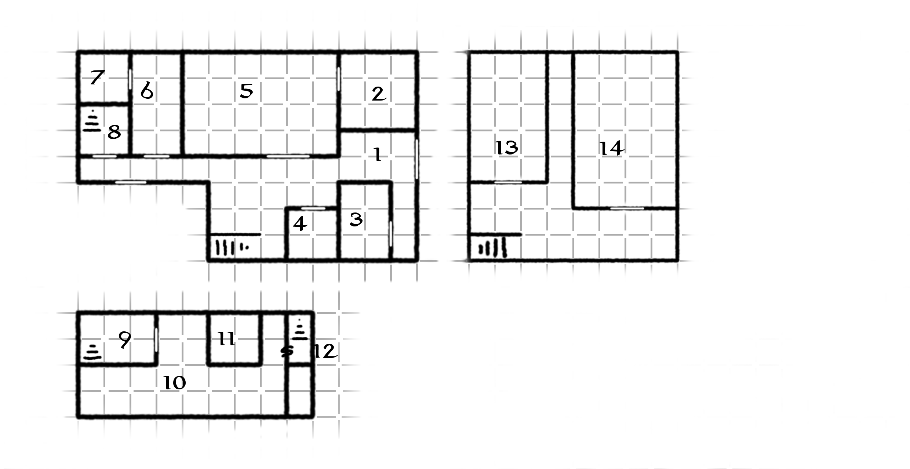

| Stealing is a serious profession. You need serious people, not people like you. All you can do at your best is work. |
| I Soliti Ignoti (Big Deal on Madonna Street) - 1958 |
| A Hole in the Plot |
|
a low fantasy city adventure for low level characters ( with some space for low level ethics ) |
| 1d8 | DC | upper city | city | lower city |
|---|---|---|---|---|
| 1 | fumble | "It's true ! I've seen a strange shadow moving around Orvienza's house last night !" says an old women grabbing you arm, she seems quite estranged. | "Last year incident was no incident, but a sign from the gods, the festival shouldn't be done at all" | "Tell you what, the Panther has left the city once and for all" |
| 2-5 | 15 | "Ah! Old crone Fruda always lamenting about something, last month was the cook having an affair with his husband, dude got fired for no reason. She's just an old evil woman goin' paranoid with age" hush one of the maids, back from the market | "Pff.. what Orvienza are donating to the church nowadays will never repay what the old family took from this city, no copper piece of they fortune is rooted in something clean. | "I met the Panther in this very tavern the day he was out, already drunk, bragging about having the biggest and surest heist of is life in mind, something about making a hole in the right place." |
| 6-7 | 20 | "My father says Orvienza's Grandfather got rich out of robbery" tells a child playing in the streets. | mio fratello è stato fortunato, ha torvato lavoro al magazzino degli Orvienza vicino alla piazza dopo che quello che vi lavorava non si è presentato al lavoro, overheard at a pub. | Un vecchio socio del pantera (Sneaky) ha messo la testa a posto e lavora come operaio al cantiere del festival |
| 8 | 25 | Ho sentito delle paure di fruda, sono solo gli utyogh nelle fogne che a volte litigano per il territorio | Pare che alcune tombe siano state violate di recente | Orvienza's grandparents used to smuggle goods for the black market from contacts in a northern city gli scambi took place directyl in their basement |
|
 |
|
 |
|
 |
|
 |
| Divinities and Beliefs: +2 on Religion Knowledge, 30gp - 4 pounds |
|
| The Art of Mixing: +1 on Alchemy, 20gp - 4 pounds |
|
| Diaries of : +3 on Knowledge Local, 20gp - 4 pounds |
|
| Principles of Contability: This is actually a book of fine erotic illustrations, 25gp - 2 pounds |